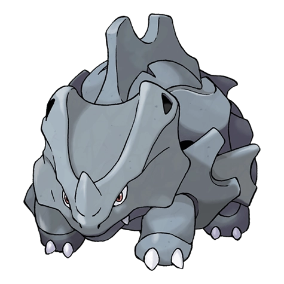
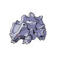

Назад
Райхорн

Райхорн — Покемон первого поколения под номером 111 в Покедекс. Обитает он в регионе Канто и относится к Каменному и Земляному типу. Райхорн проносится по прямой траектории и крушит всё на своём пути. Он ничего не почувствует, даже если сломя голову врежется в стальной блок. Однако на следующий день этот Покемон может почувствовать некоторую боль от столкновения.
Тип:
Земляной
Каменный
Эволюция

# 111 Райхорн
=>
# 112 Райдон